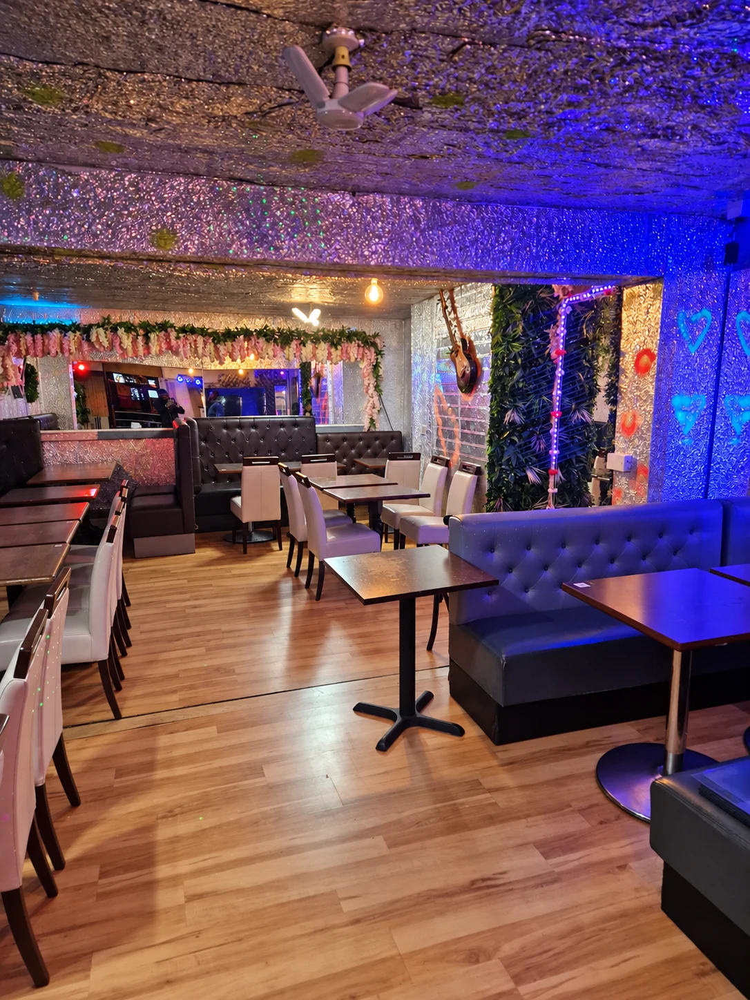

Gather your people.
Call our team to arrange your visit. Your booking is confirmed directly by the restaurant.
Make an evening of it.
Find us at 129 Streatham High Road, London SW16 1HJ.
Reservations are required. Call the team to arrange your table. A kids’ menu is available.
Opening hours
- Monday – Wednesday
- Closed
- Thursday – Saturday
- 6pm – 3:30am
- Sunday
- 6pm – 2:30am
Closing times are the following morning.
Kids’ menu available · Typical spend £30–40 per person, as reported by diners. See our menu for individual prices.
Streatham High Road
London · SW16 1HJ
Congolese cuisine
Bar & grill

A space for
your next gathering.
Planning a birthday, a celebration or a get-together? Ask the Tumba Grill team about hiring the space for your event.
Let us know your preferred date, approximate guest numbers and what you have in mind. The team can talk you through availability, seating arrangements, food and drinks, and hire pricing.
All arrangements and bookings are confirmed directly with the restaurant.
Call 07404 053691